АвторизоватьсяЗарегистрироваться
Wi-Fi веб-радио с ESP8266 и VS1053 (KaraDio)
Автор: karawin в Circuits Wireless
152.347
176
Введение: Wi-Fi веб-радио с ESP8266 и VS1053 (KaraDio)
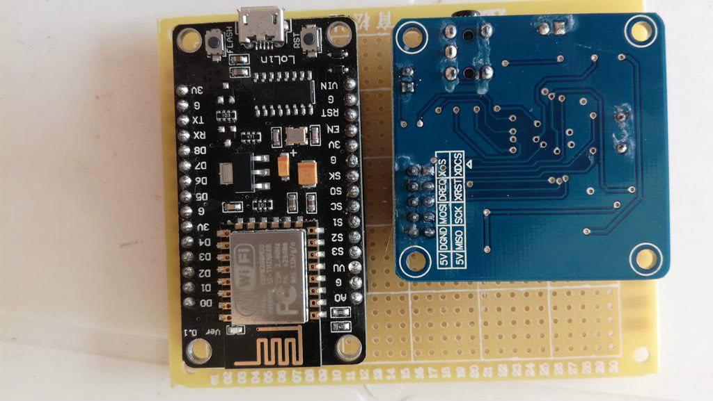
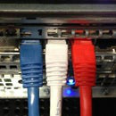Автор: karawinКараВинСледовать
О: Старый инженер на пенсии Подробнее о karawin »
Проигрыватель Wi-Fi-радио всего с двумя недорогими платами.
2017/08/25 Новый релиз 1.6 : см. страницу Hackaday.
Для получения дополнительной информации или вопросов вы можете войти в группу Karadio на Facebook.
Описание:
Управление с помощью любого браузера (например, Edge, Chrome, Mozilla и т. д.), а также с помощью внешней аппаратной панели или интерфейса UART.
Память на 256 станций
Обновление OTA
Читайте прямые потоки mp3 или ogg или плейлисты .pls .m3u и .xspf
Чтение со скоростью потока до 320 кбит/с,
Новая веб-страница, отлично подходит для мобильных устройств и компьютеров.
Встроенная конфигурация Wi-Fi через веб-интерфейс или UART
Отображаемые метаданные (например, название текущей песни, если оно указано в потоке),
Все настройки сохранены (настройки звука, станции, Wi-Fi)
Сервер с несколькими клиентами с автоматическим обновлением для всех (websocket),
Станции можно скачать и загрузить на веб-сайте,
Очень быстрый отклик веб-сайта за счет кэширования локальной информации в браузере и веб-сокете.
Светодиод показывает состояние оборудования. Скорость мигания: инициализация, 90%вход 10%выход: соединение в процессе, 10%вход 90%выход: оборудование готово.
Внешний интерфейс ЦАП i2s на vs1053 включен.
Автозапуск при включении питания, если включен автозапуск.
Шаг 1: Шаг 1: Что вам нужно
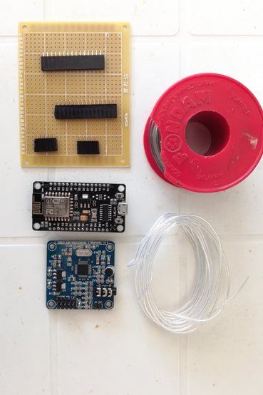
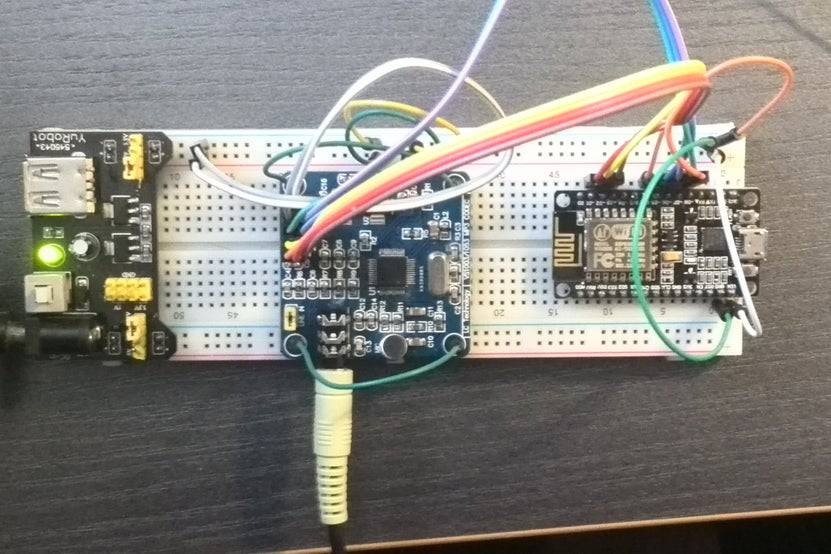
Требуемые детали:
Узел Mcu V3 (на aliexpress)
Модуль VS1053 (aliexpress)
Стекловолоконная плита эпоксидные плиты (aliexpress)
2,54 мм 40-контактный прямой женский однорядный штыревой разъем для печатной платы (aliexpress)
Несколько проводов и паяльник.
ПК или другое устройство с портом USB
и кабель usb-micro usb. (aliexpress)
Внешний усилитель или наушники.
Прототип можно также изготовить с помощью макетной платы и нескольких соединительных проводов.
Шаг 2: Шаг 2: Сборка оборудования веб-радио
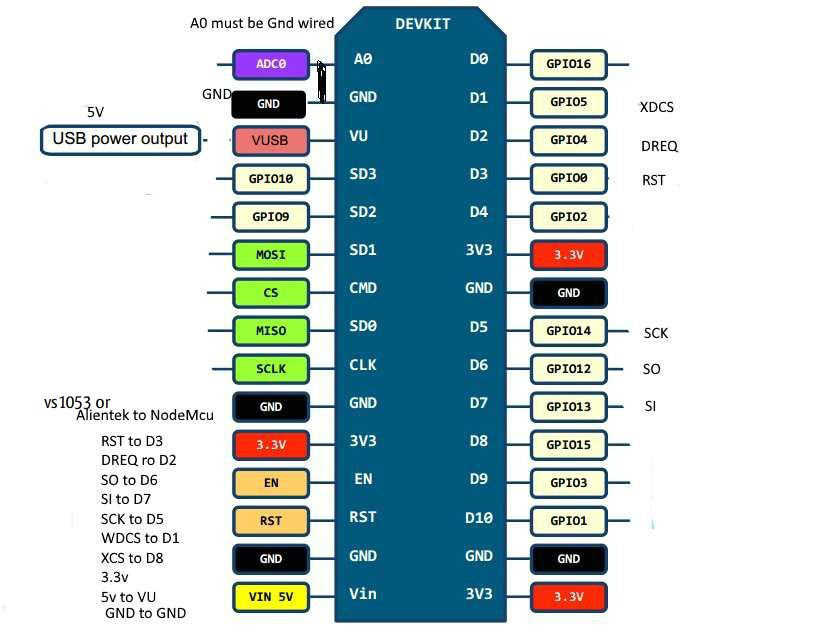
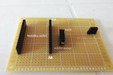
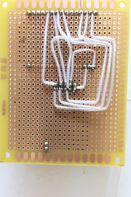
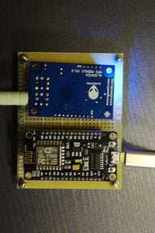
Следуйте схеме для подключения платы.
Будьте осторожны, vs1053 трудно паять. Штифты очень близко друг к другу.
Используйте очень тонкий паяльник.
Проверьте каждый провод перед следующим шагом.
Питание поступает от микро usb nodeMcu, подключенного к ПК, или 5-вольтового трансформатора.
Шаг 3: Шаг 3: Загрузка программного обеспечения и первое использование
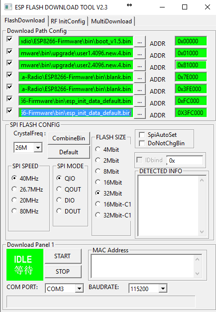
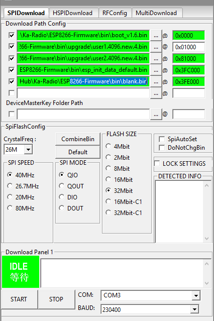
Загрузка программного обеспечения
Вам понадобится инструмент загрузки ESP flash.
Загрузите его на странице Espressif
Двоичные файлы можно найти на Github или hackaday.
Следуйте изображению, чтобы настроить инструмент в зависимости от его версии.
Чтобы войти в режим прошивки nodeMcu, нажмите и удерживайте кнопку прошивки, затем нажмите кнопку сброса. Кнопку прошивки можно отпустить.
Начните загрузку кнопкой запуска инструмента прошивки ESP.
Через некоторое время загорится зеленый индикатор «Готово».
Нажмите кнопку сброса nodeMcu. Если все прошло успешно, файлы nodeMcu начнут мигать.
Первое использование
Если точка доступа вашего маршрутизатора неизвестна,
веб-радио инициализируется как точка доступа. Подключите свой Wi-Fi к ssid "WifiWebRadio", перейдите к 192.168.4.1, чтобы отобразить веб-страницу, перейдите в "настройки" "Wifi" и настройте свой ssid ap, пароль, если он есть, желаемый IP или используйте DHCP, если вы знаете, как получить указанный DHCP IP (терминал или сканирование сети).
В поле шлюза введите IP-адрес вашего маршрутизатора. Подтвердите. Оборудование перезагрузится с новой конфигурацией. Подключите свой Wi-Fi к вашей точке доступа и перейдите к IP-адресу, указанному в конфигурации.
Поздравляем, вы можете редактировать свой собственный список станций.
Не забудьте сохранить свой список станций на случай возникновения проблем или для нового оборудования. Если точка доступа уже известна esp8266, IP-адрес по умолчанию предоставляется DHCP.
Пример списка станций можно загрузить через веб-страницу и загрузить в веб-радио.
Все будущие обновления будут осуществляться в интерфейсе веб-радио через функцию OTA.
Шаг 4: Несколько изображений
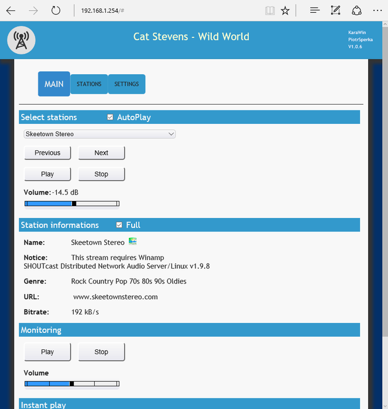
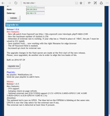
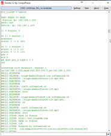
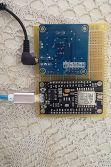
Esp8266 — невероятный процессор. Этот проект создан в среде freertos и содержит множество задач: веб-клиент для подключения к радиопотоку, веб-сервер для предоставления интерфейса браузера и дочерней задачи для каждого клиента), задача uart для отображения и отправки команд на веб-радио, задача для управления внешней панелью управления на входе ADC (схема в каталоге оборудования на github), задача для каждого клиентского веб-сокета и т. д.
Это сложный проект, но процессор действительно мощный. Единственным ограничением является нехватка оперативной памяти, которую можно устранить, добавив внешний чип на шину spi. См. страницу hackaday или страницу github.
Интерфейс uart может отображать некоторую отладочную информацию и может отправлять элементы управления на веб-радио.
Список команд см. в файле uartinterface.txt по адресу
http://karadio.karawin.fr/Interface.txt